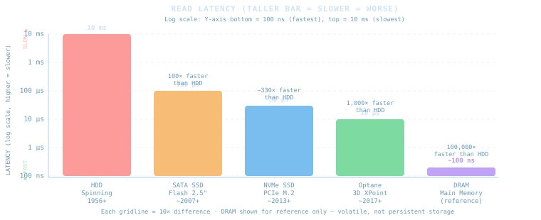
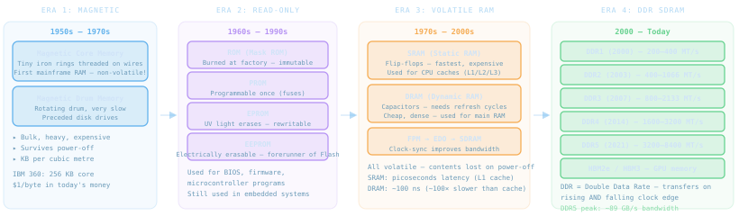
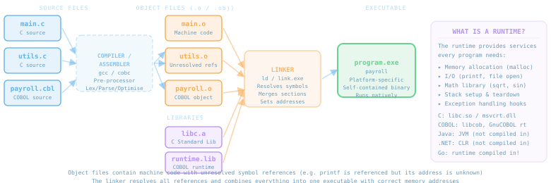
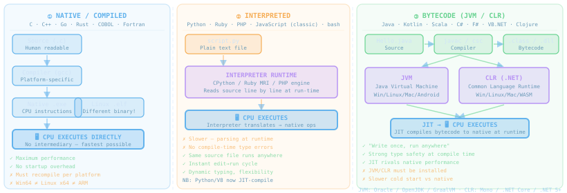

From SaaS products that enterprise uses today, through the evolution of storage and memory, to how programs are written, compiled, typed, and executed — the bedrock every software engineer must know.
Founded 1999. Marc Benioff's vision: "No Software." Pay per seat per month, access via browser. Killed the idea that enterprises must own the software they use. Today a $30B+ revenue platform.
Founded in Chennai, 1996. Bootstrapped — never took VC funding. 100M+ users, 55+ integrated applications, operates from tier-2 Indian cities. Directly competes with Google Workspace, Microsoft 365, Salesforce, and QuickBooks simultaneously.
From the spinning magnetic drums of 1956 to Intel Optane in 2017 — read latency dropped by a factor of one million. Each generation made new software architectures possible.

| Technology | Read Latency | Seq. Read | Seq. Write | Interface | Notes |
|---|---|---|---|---|---|
| HDD (7200 RPM) | 5–10 ms | 150–200 MB/s | 140–180 MB/s | SATA | Mechanical seek; still cheapest per TB |
| SATA SSD | 70–100 µs | 500–560 MB/s | 400–520 MB/s | SATA 6Gbps | 100× faster than HDD; SATA is the bottleneck |
| NVMe SSD (PCIe 4) | 20–30 µs | 5–7 GB/s | 4–6 GB/s | PCIe 4 M.2 | 10× faster than SATA; direct CPU bus access |
| Intel Optane (3D XPoint) | ~10 µs | 2.5 GB/s | 2 GB/s | PCIe / DIMM | Persistent memory; byte-addressable. Discontinued 2022. |
| DRAM (DDR5) | ~100 ns | 60–89 GB/s | 60–89 GB/s | Memory bus | Not persistent — reference only |
Each technology solved a specific problem of its era — portability, capacity, speed, or network sharing. Many coexist today.
Memory (RAM) and storage are often confused — RAM is fast, volatile working space; storage is persistent. Both evolved dramatically, but at very different rates and for different purposes.

Every programming language is an abstraction over the CPU's raw instruction set. Each rung of the ladder trades control for productivity. The CPU only ever executes binary opcodes — everything else is a translation.
MVI A, 5 — English mnemonics, 1-to-1 with opcodes, still CPU-specificc = a + b — one line compiles to many opcodes; portable across CPUsc = a + b — same syntax, further from hardware, even more portableMVI A, 5) directly to their binary opcodes (3E 05). One-to-one mapping. The compiler does the reverse — it takes one high-level statement and generates many assembly instructions.
Exactly the same two operations — add and subtract — written at every level of the abstraction ladder. The CPU executes the same instructions regardless; only the notation changes.
; Load a=5 into register A
3E 05 ; MVI A, 05h
; Load b=3 into register B
06 03 ; MVI B, 03h
; c = A + B → result in A
80 ; ADD B
; Store c at address 2000h
32 00 20 ; STA 2000h
; d = c - b (A=c, B still=3)
90 ; SUB B
; Store d at address 2001h
32 01 20 ; STA 2001h
76 ; HLTRaw bytes. No names. Registers A and B are the only "variables." Memory addresses instead of variable names. Every byte has meaning.
; a = 5, b = 3
MVI A, 05h ; A ← 5
MVI B, 03h ; B ← 3
; c = a + b
ADD B ; A ← A+B
STA 2000h ; mem[2000]←A
; d = c - b
SUB B ; A ← A-B
STA 2001h ; mem[2001]←A
HLT ; haltEnglish mnemonics replace hex bytes. Assembler translates 1:1. Still 8085-specific — won't run on ARM or x86.
C Fortran: vars are typed
C INTEGER means 16/32-bit int
INTEGER A, B, C, D
A = 5
B = 3
C c = a + b
C = A + B
C d = c - b
D = C - B
PRINT *, C, D
STOP
ENDNamed variables. Compiler generates all register loads and stores. One line = many opcodes. Runs on any CPU Fortran compiles for.
/* same logic in C */
#include <stdio.h>
int main() {
int a = 5;
int b = 3;
/* c = a + b */
int c = a + b;
/* d = c - b */
int d = c - b;
printf("%d %d\n",c,d);
return 0;
}Functions, braces, standard library. gcc main.c compiles this for x86, ARM, RISC-V — same source, different binaries.
A single gcc hello.c quietly runs four steps: pre-processing, compilation, assembly, and linking. Understanding each step explains every "undefined reference" error you've ever seen.

#include and #define — pure text substitution-O2).o).o files + libraries → final executable.o file contains machine code with unresolved references — e.g. printf is called but its address is unknownmain(), provides malloc/printf/exitOnce your source code is written, there are three fundamentally different ways it can be turned into running behaviour. Each model makes different trade-offs between portability, performance, and safety.

| Language / Tech | Model | Runtime | Platform binary? | Examples |
|---|---|---|---|---|
| C, C++, Go, Rust | Native | libc / built-in | Yes — x64 ≠ ARM | Linux kernel, Chrome, Docker |
| Fortran, COBOL, Pascal | Native | Language runtime | Yes | Banking cores, scientific HPC |
| Python, Ruby, PHP | Interpreted | CPython, MRI, Zend | No — source is universal | Django, Rails, WordPress |
| bash, PowerShell, Perl | Interpreted | Shell / engine | No | CI/CD scripts, automation |
| Java, Kotlin, Scala | Bytecode (JVM) | JVM (JDK/OpenJDK) | No — .class is universal | Spring Boot, Android, Kafka |
| C#, F#, VB.NET | Bytecode (CLR) | .NET Runtime | No — IL is universal | ASP.NET, Unity, Azure Fns |
| JavaScript (V8/SpiderMonkey) | JIT compiled | V8 / SpiderMonkey | No — text source | Node.js, React, Chrome |
| Swift (iOS), Dart (Flutter) | Native (AOT) | Minimal runtime | Yes | iOS apps, Flutter |
Both compile to an intermediate bytecode and run on a virtual machine. They share the same fundamental idea but differ in language philosophy, ecosystem, and platform reach.
javac Hello.java → Hello.class (bytecode)java Hello — JVM interprets + JIT compiles to nativecsc Hello.cs or dotnet build → Hello.dll (IL bytecode)| Aspect | JVM / Java | CLR / .NET |
|---|---|---|
| Bytecode format | .class files / JAR | IL in .dll / .exe |
| JIT engine | HotSpot, GraalVM | RyuJIT |
| Memory model | GC — generational | GC — generational + LOH |
| Native AOT | GraalVM Native Image | NativeAOT (.NET 7+) |
| Primary language | Java / Kotlin | C# / F# |
| Mobile | Android (ART) | iOS/Android via MAUI/Xamarin |
The dominant shift in software design from the 1960s to the 1990s. Procedural programs are sequences of instructions. OOP programs model the real world as interacting objects.
main()), then calls one procedure after anotherBankAccount is a class; Alice's account is an object./* Data lives in a struct — just a record */
struct Account {
char owner[50];
double balance;
};
/* Functions are SEPARATE — they receive
the struct as an argument. */
void deposit(struct Account *a, double amt) {
a->balance += amt;
}
double getBalance(struct Account *a) {
return a->balance;
}
/* Caller passes data explicitly */
int main() {
struct Account alice;
deposit(&alice, 100.0); // data passed in
getBalance(&alice);
}// Class = blueprint (exists once in source)
// Object = instance (created with 'new')
public class BankAccount {
// Fields — private, only THIS class touches them
private String owner;
private double balance;
// Constructor — called when 'new' is used
public BankAccount(String o) {
owner = o; balance = 0;
}
// Methods BELONG to the object — no arg needed
public void deposit(double amt) {
balance += amt; // accesses its own field
}
public double getBalance() { return balance; }
}
// Usage — object carries its own data
BankAccount alice = new BankAccount("Alice");
alice.deposit(100.0); // no data passed — it's insideEvery OOP language implements the same four concepts. Understanding them is the difference between code that works and code that scales.
Bundle data and the methods that operate on it inside one object. Hide internals with private. Only expose what callers need (public interface). Prevents accidental state corruption.
Bank account example: balance is private — only deposit() and withdraw() can change it. No external code can set it to -∞.
A child class extends a parent class, inheriting its fields and methods while adding or overriding behaviour. Models "is-a" relationships.
SavingsAccount extends BankAccount — inherits deposit() but adds addInterest(). Code reuse without copying.
One interface, many implementations. A variable of type Shape can hold a Circle or a Rectangle. Calling shape.area() dispatches to the right implementation at runtime.
Greek: "many forms." Write code against the interface — the concrete type can change without changing the caller.
Expose what something does, hide how it does it. Interfaces and abstract classes define contracts. Callers depend on the contract, not the implementation.
PaymentGateway interface with charge() method — swap Stripe for Razorpay by changing one line, not by rewriting the payment flow.
BankAccount class is the architect's blueprint — it exists once in the source code. An object is a specific instance created in memory when new BankAccount("Alice") runs. You can have millions of objects, all sharing one class definition. The class defines structure; objects hold data.
Functions become first-class citizens — passed as arguments, returned from functions, stored in variables. Computation is the evaluation of mathematical functions with no side effects. Immutability is key.
list.filter(x → x > 0) — the arrow function is passed as a valuemap, filter, reduce — operate on collections without explicit loopslist.stream().filter().map().collect()map(), filter(), list comprehensions, lambdas.filter().map().reduce() on arrays; functions are objectsWhen does the language check that you're using a variable correctly — at compile time or at runtime? This single design decision has enormous consequences for developer experience, performance, and bug rates.
int age = 25;
String name = "Alice";
// ❌ COMPILE ERROR — before the program runs
int result = age + name; // rejected by javac
// error: incompatible types: String cannot
// be converted to int
// ✓ Must be explicit
String out = name + " is " + age;
// Compiler knows: String+int → String
// Type inference — var (Java 10+)
var list = new ArrayList<String>();
// type inferred as ArrayList<String>
// still statically typed — compiler knowsage = 25 # int — for now
name = "Alice" # str
# ✓ This runs fine
out = name + " is " + str(age)
# ❌ TypeError — but ONLY when this
# line of code actually executes
result = age + name
# TypeError: unsupported operand type(s)
# for +: 'int' and 'str'
# ✓ Perfectly legal — age is now a string!
age = "twenty five"
# The variable has no declared type;
# the value carries the typeImperative: tell the computer exactly how to do it, step by step. Declarative: describe what you want — let the system figure out how. SQL is the most familiar declarative language; functional pipelines bring this style into general-purpose code.
numbers = [1,2,3,4,5,6,7,8,9,10]
# You control every step explicitly:
total = 0 # mutable accumulator
for n in numbers:
if n % 2 != 0: # test inline
total += n # mutate state
print(total) # 25
# You decide: loop order, accumulation,
# when to stop, how state changes.from functools import reduce
numbers = [1,2,3,4,5,6,7,8,9,10]
# ── Version A: lambda (anonymous function) ──
# lambda n: n%2!=0 IS a function — with no name.
# It is passed AS A VALUE to filter().
odds = filter(lambda n: n%2!=0, numbers)
total = reduce(lambda a,b: a+b, odds)
print(total) # 25
# ── Version B: named functions (identical result) ──
# isOdd and add are ordinary functions.
# They are passed exactly like lambdas.
def isOdd(n): # same as lambda n: n%2!=0
return n % 2 != 0
def add(a, b): # same as lambda a,b: a+b
return a + b
odds = filter(isOdd, numbers) # function as value
total = reduce(add, odds) # function as value
print(total) # 25 — identical outputlambda n: n%2!=0 — an anonymous function created inline. Convenient for short, one-time use.def isOdd(n): return n%2!=0 — the same logic with a name. Reusable, testable, readable.isOdd is not being called here; it is being passed as a value. filter calls it internally on each element.add is applied cumulatively: add(add(add(add(1,3),5),7),9) = 25SELECT SUM(amount) FROM sales WHERE odd = 1 — you describe the result, not the algorithmA DLL (.dll on Windows, .so on Linux, .dylib on macOS) is a library that lives on disk as a separate file. There are two ways for a program to use it — and understanding the difference explains plugin systems, hot-patching, and "DLL hell."
main() startskernel32.dll, msvcrt.dll, libc.so.6LoadLibrary("plugin.dll") on Windows; dlopen("plugin.so") on LinuxGetProcAddress() / dlsym()/* Link with -lm (math library) */
#include <math.h>
int main() {
/* sqrt is resolved automatically */
/* by the OS loader before main() */
double x = sqrt(16.0);
return 0;
}
/* libm.so is listed in the binary's
"needed" section — auto-loaded */#include <dlfcn.h>
int main() {
/* Load plugin at runtime */
void *lib = dlopen("./plugin.so",
RTLD_LAZY);
/* Get function address by name */
typedef void (*RunFn)();
RunFn run = dlsym(lib, "run");
run(); /* call plugin fn */
dlclose(lib); /* unload safely */
}Every object allocated on the heap must eventually be freed. The question is: who is responsible — the programmer, or the runtime? The answer defines your language's entire memory safety story.
malloc() to allocate; must call free() to releaseunique_ptr, shared_ptr) automate this with RAII — destructor frees memoryThese underpin every technology decision you will make as an engineer.
Salesforce proved enterprises would rent software instead of buying it. Zoho proved a bootstrapped Indian company could compete globally. CAPEX→OPEX is now the default for all software procurement.
HDD latency is 10 ms; NVMe is 30 µs; RAM is 100 ns — five orders of magnitude. Whether you can cache in RAM, stream from SSD, or must hit disk shapes every performance decision.
Every language — Python, Java, C# — translates to CPU instructions. The abstraction layers (Assembly → C → JVM bytecode → Python) trade control for productivity at each step.
Compilation produces object files with unresolved references. Linking resolves them. The runtime provides startup services. Understanding this explains every linker error you will ever encounter.
Native = fastest, platform-specific. Interpreted = portable, slower. Bytecode (JVM/CLR) = portable + JIT performance. Choose based on your constraints — startup time, throughput, and portability all differ.
Encapsulation, Inheritance, Polymorphism, Abstraction. Class = blueprint; Object = instance. The four pillars make large codebases maintainable by decoupling what something does from how it does it.
Functional programming's insistence on immutable data is not academic — mutable shared state requires locks, which are the primary source of bugs and performance bottlenecks in concurrent systems.
Static types catch type errors at compile time — before the code ships. Dynamic types allow flexibility at the cost of runtime surprises. TypeScript (JavaScript + types) exists because the industry learned this the hard way.
SQL, HTML, Terraform, React — all declarative. You say what you want; the platform decides how. Imperative code gives you control but responsibility. And whether memory is managed manually (C), by reference counting (Swift), or by GC (Java) is the most consequential language design decision — it determines your safety guarantees, your performance profile, and what class of bugs you are even capable of introducing.
From magnetic core memory holding kilobytes in 1955 to DDR5 delivering 89 GB/s in 2024. From hex opcodes to Python in one abstraction ladder. From manual malloc to concurrent garbage collectors that pause for under a millisecond. These fundamentals are not historical curiosities — they are the substrate every cloud service, every AI model, and every mobile app runs on.